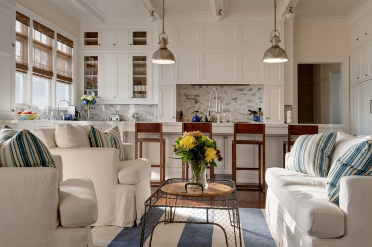
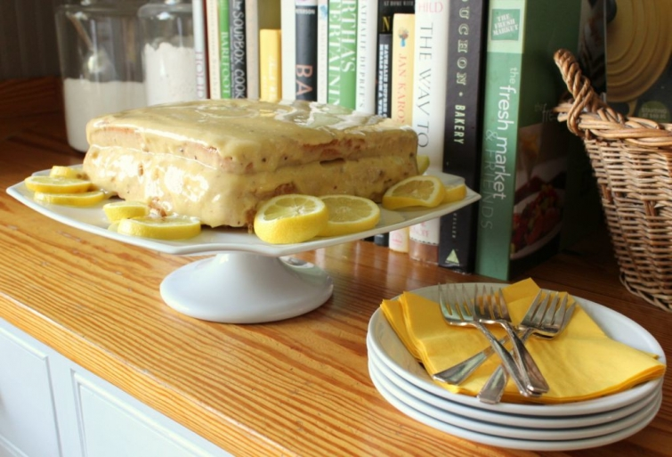

.png)
.PNG)
.PNG)
.PNG)
.PNG)
.PNG)
.JPG)
.JPG)
.PNG)
.PNG)


source
Happy almost-summer-vacation weekend! We are down to our last week of school, and things are in their craziest and busiest of times in the school year. So I am sending you this post as quickly as I can, and then I am off to get some desserts together.
The living area above and dining area below came from the same home. Take a peek at it in the links below the photos.
Do you remember my ugly lemon cake from our Mother’s Day post?
I found a recipe for it here.
And another recipe here, but they frost it with a 7 minute frosting in this one.
If you don’t want to go through all the trouble of making one and you happen to live in Alabama, Florida, or Mississippi, you can actually purchase a 7 layer beauty here.
If you have plans for any summer entertaining this year, this post if full of great tips – like cooking large amounts of corn on the cob in a cooler!
I found an interesting place to stay if you happen to be vacationing in the Seattle area. You can peruse Treehouse Point here. They have quite a few treehouses on the property.
Love this house I ran across the other day. You might want to check out several of this architect’s projects on his website.
Here is another pretty house for you to drool over…this time from Traditional Home’s website.
We have a graduation ceremony to attend today and then a small get-together for desserts here tonight…. nothing major. 🙂 I thought this themed Sail Away party was cute for a graduation celebration…lots of clever and creative ideas! See what you think…
Our Disney daughter made it home yesterday, (yay!) and a sweet reader sent me flowers to celebrate daughter’s homecoming and my upcoming retirement. 🙂 (And they go with all the lemon stuff!)

I love Disney music, and I ran across this video a month or so ago. It features the very talented Peter Hollens in a duet singing a medley of some of my favorite Disney theme songs. Well… recently I was browsing online to see if the Piano Guys had any new videos out. And yes they do. 🙂 Imagine my surprise when I saw that the new one features…Peter Hollens!
This new video is beautiful, the words meaningful, and the story behind it is powerful. I hope you enjoy.
Thank you for stopping by my friends. I hope your weekend is wonderful. 🙂
Until next time…


.PNG)
Love your blog. Just found it today. BTW, you might want to read up on making corn in a cooler. It’s not good for the plastic to heat up as it releases chemicals you really don’t want to ingest. I was bummed when I found that out – cooking large amounts of corn is time consuming and a cooler would speed things up!
——————————————————————–
Thank you visiting Kim! Welcome! And thanks for the info on the cooler…I had no idea, but that makes perfect sense. I guess we will have to resort to a huge pot on the side burner of our grill.
Kelly
Smitten Kitchen recipes are foolproof. She and Ina Garten are my go to for excellent recipes that become family favorites. So definitely try her version of lemon layer cake. The s’mores cake in her cookbook is wonderful too.
Beautiful music, lovely flowers. I am thinking that this is your very last “end of the school year”? With graduations and your kids going in so many directions this must be a busy yet bittersweet time. Enjoy, hold fast to the wonderful memories you are making. Good luck!
Who would’ve thought…corn in a cooler! With every visit to your site I learn something new.
Kelly,
Those house pictures are all nice, bright spaces. I always thing a doggie in the picture takes a house to a home for me. I do love dogs though. I am so glad that your daughter made it home safely. The desserts graduation celebration you hosted sounds super fun! I hope all went well. Good luck with your last week of school. It is our last week of school as well. Craziness and celebration all the same time. Thanks for sharing! Take care.
DAwn
Oh— My — Gracious!!! I took one look at the lemon cake from Heather PJ and instantly knew it had to be the same recipe as my grandmother’s “Cheese Cake” which has absolutely no cheese in it, but is lemon flavored. I clicked over to Heather’s site and sure enough, not only is it the same cake, but she explained it was called ‘cheese” cake because everyone thought it looked like a big wheel of cheese!
The funny thing is, is how regional it is. No one has ever heard of it, but Heather is from Andalusia, AL and my Grandmother was from within 30-40 miles from there in DeFuniak Springs, FL!
Such a small world, and now I know how my family’s “Cheese Cake” got it’s name!
Thanks for the info, and good luck with the last crazy week of school.
Another refreshing post– on the run!:) love white kitchens, tree houses and that trick with corn on the cob really works when serving large groups! And any left overs can be cut off and frozen for later! So happy your daughter got home safely and hope she gets to stay for awhile or will be returning soon for a nice summer with her retired mama!:) fun times ahead!
Kelly,
I love, love, love each and every kitchen here! I will enjoy checking the links you’ve given us. We have a quiet weekend and believe it or not, today’s high is 61 degrees! Mother Nature decided we deserved a little of the winter weather she withheld as she was so busy with her delivery on the east coast. 🙂 I am going to put a fire in the fireplace and curl up with my computer and a few magazines.
Enjoy your day…how nice to have your Disney daughter home…I’m sure she loves that new label. 🙂
xo,
Karen
Kelly, wonderful house eye candy once again! I have a severe case of kitchen envy, for sure! Loved the fun link to the tree houses in our Seattle area. My son would love to stay there. The newest video with the Piano Guys was so beautiful! I imagine the ending of this school year is bittersweet for you…retirement after years of teaching. I’m sure you will enjoy the new chapter in your life though! Have a great weekend!
I’ll take the home you featured from Traditional Home. The Hamptons, ……Oh the Hamptons! Some of the décor was a bit modern, for my liking. I loved the kitchen, bedrooms and of course that pool area. Sigh! Overcast through the weekend here, but hope to get out anyway. A vintage shop, to checking out vendors at the one day event, called Gardenology in Geneva. Have a great weekend. That bouquet was so pretty. How sweet.
Oh, what a beautiful duet! Thank you for including it in your post. Beautiful music soothes the soul~
What a great white kitchen, it’s just beautiful! I’m crazy about your decor for the graduation party, just too cute and perfect! Okay, must tell you, I’ve been looking at your home and oh my goodness, it’s awesome! Everything in it is just fabulous!
Enjoy your day and have fun at the party!
Nancy